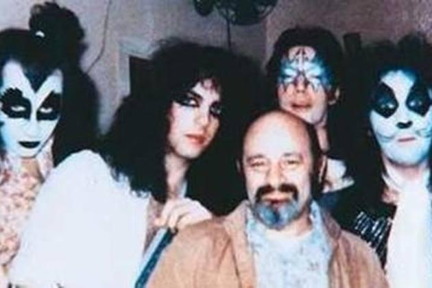
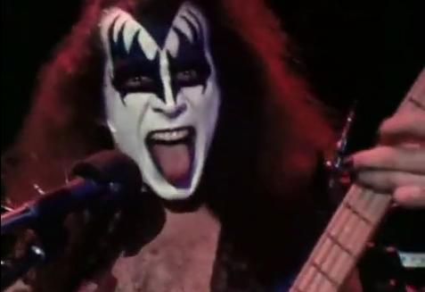
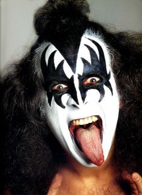
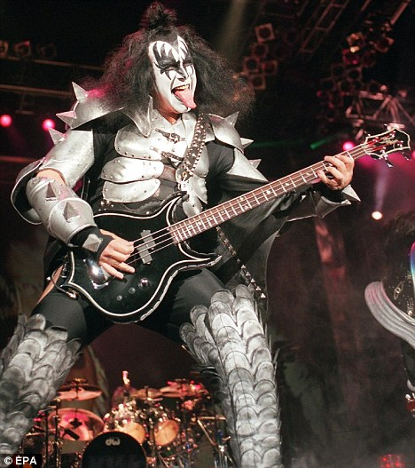
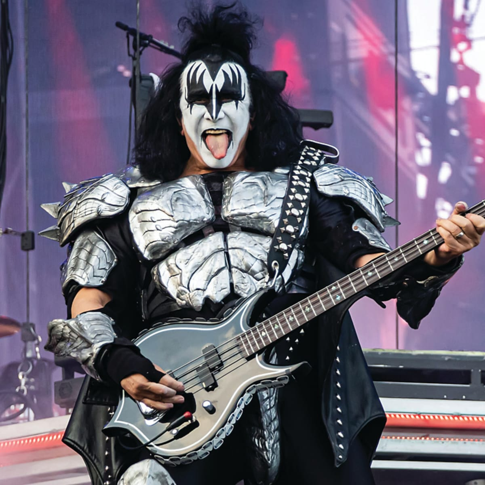

Gene Simmons, the iconic bassist of the legendary rock band KISS, has become synonymous with his elaborate makeup over the decades. The evolution of Simmons' makeup has been a journey marked by innovation and theatricality. In the early years of KISS, Simmons sported a striking black and white design, resembling a demon or a stylized skull, with exaggerated features and stark contrasts. As the band's popularity soared, Simmons' makeup evolved, incorporating elements of horror and sci-fi, such as spikes, metallic accents, and intricate patterns. Throughout the years, Simmons has experimented with various looks, each one adding a layer of mystique and spectacle to his stage persona. From the classic demon to the cosmic warrior, Gene Simmons' makeup has remained an integral part of KISS's identity, captivating audiences and leaving an indelible mark on the world of rock and roll.
1 / 6

First show with makeup
2 / 6

First nationally televised show. Dick Clark's American Bandstand
3 / 6

Kiss Alive promo video
4 / 6

The most famous version of his makeup
5/ 6

Reunion tour of the orgiginal memebrs and broght back the makeup
6 / 6

Recently retired Gene Simmons
❮
❯